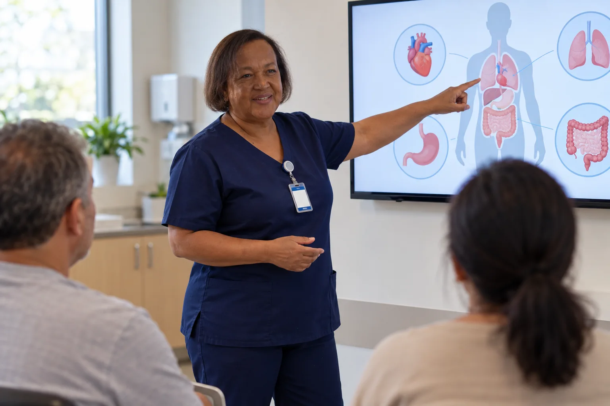
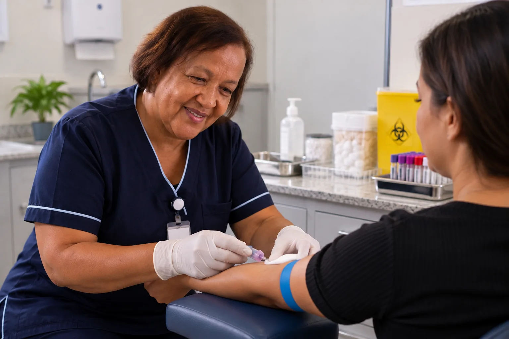
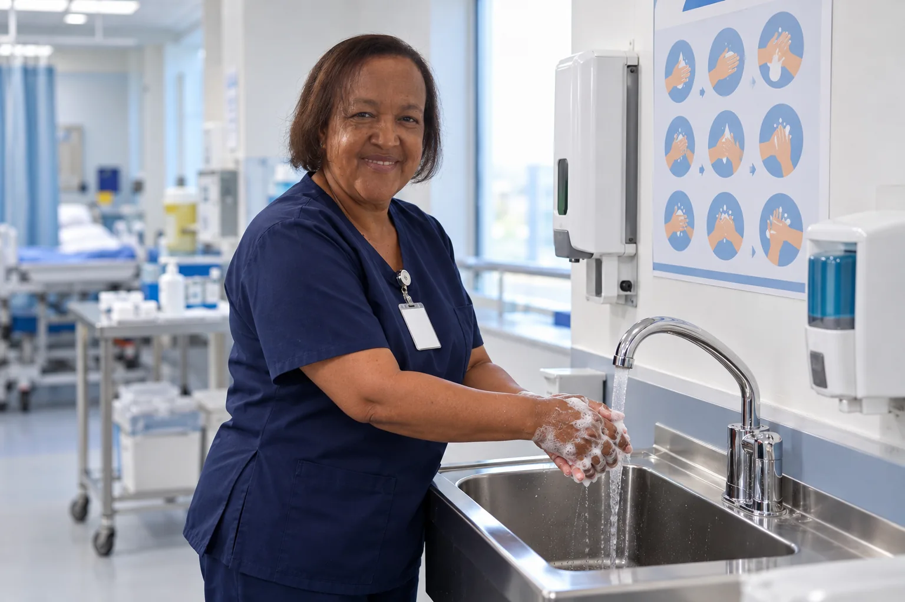

Consultas e orientações
Avaliação das necessidades de cuidado e orientação em saúde, conforme as competências profissionais aplicáveis.
Consultar disponibilidade →Cada pessoa merece ser cuidada com atenção às suas necessidades, orientação clara e respeito à sua individualidade.

Acredito que o cuidado em enfermagem vai além dos procedimentos. Ele também envolve escuta, atenção, respeito e uma comunicação clara com cada pessoa atendida.
Meu propósito é oferecer um atendimento responsável e acolhedor, considerando as necessidades individuais e valorizando o respeito em cada etapa do cuidado.
Estou em Uberlândia, Minas Gerais, e convido você a entrar em contato para conhecer os serviços disponíveis e esclarecer suas dúvidas.
Conversar com RosangelaCada pessoa possui necessidades específicas. Entre em contato para conhecer as possibilidades de atendimento e confirmar a disponibilidade do serviço adequado para você.
Avaliação das necessidades de cuidado e orientação em saúde, conforme as competências profissionais aplicáveis.
Consultar disponibilidade →Assistência no ambiente domiciliar, conforme a necessidade do paciente, a avaliação profissional e a disponibilidade.
Consultar atendimento →Apoio à continuidade do cuidado e às orientações de enfermagem, de acordo com o planejamento definido.
Saber mais →Cuidados específicos realizados conforme a indicação, a habilitação profissional e as normas aplicáveis.
Consultar serviços →Os serviços listados são possibilidades de conteúdo e devem ser mantidos no site somente se forem efetivamente oferecidos e compatíveis com a habilitação profissional.
Uma comunicação atenta e um ambiente organizado ajudam a tornar cada etapa do cuidado mais clara e acolhedora.


Mais do que realizar procedimentos, o cuidado também envolve uma relação de confiança, comunicação transparente e atenção responsável em cada etapa.
Tire suas dúvidasEscuta atenta e respeito às necessidades e particularidades de cada pessoa.
Atuação orientada pelas normas profissionais e pelos limites de competência.
Informações objetivas para ajudar pacientes e familiares a compreender o atendimento.
Contato direto para esclarecer disponibilidade, modalidades e agendamento.
Um caminho simples para conhecer os serviços e entender as opções disponíveis.
Envie uma mensagem pelo WhatsApp para solicitar informações.
Compartilhe apenas as informações necessárias para identificar sua dúvida.
Verifique disponibilidade, modalidade de atendimento e condições do serviço.
Se houver disponibilidade, alinhe a data e os detalhes do atendimento.
Confira algumas respostas iniciais. Se precisar de mais informações, entre em contato diretamente.
Fale com RosangelaOs serviços e suas disponibilidades devem ser confirmados diretamente com Rosangela. Envie uma mensagem para explicar o que procura e receber informações.
A disponibilidade de atendimento domiciliar precisa ser confirmada conforme a região e o tipo de cuidado solicitado.
Entre em contato pelo WhatsApp para consultar horários disponíveis e combinar os detalhes do atendimento.
Solicite as informações sobre valores diretamente pelo WhatsApp, informando qual serviço deseja consultar.
A área de atendimento e a disponibilidade para cada localização devem ser confirmadas antes do agendamento.
Sim. O WhatsApp é o canal de contato para solicitar informações sobre os serviços e as opções de agendamento. Evite enviar dados de saúde desnecessários pela primeira mensagem.
Entre em contato para confirmar a região atendida, a modalidade de serviço e a disponibilidade de horários.
Entre em contato para esclarecer dúvidas e conhecer os serviços de enfermagem disponíveis.